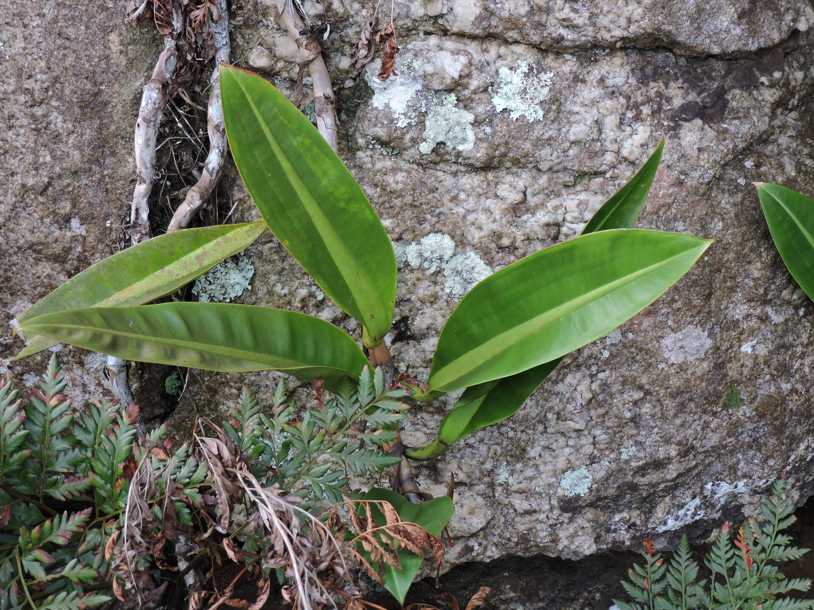
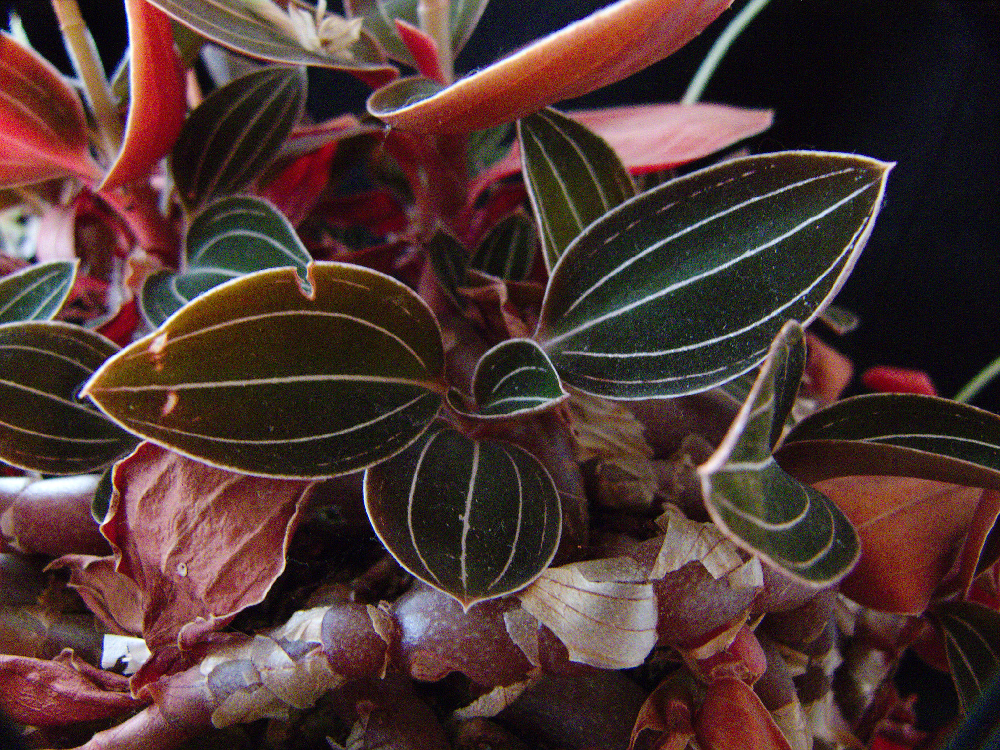
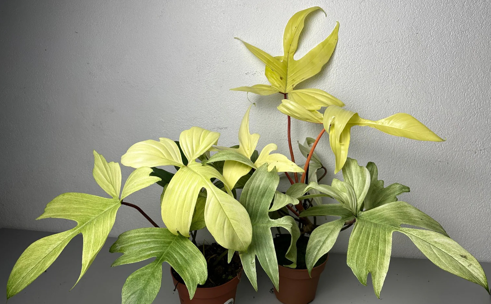
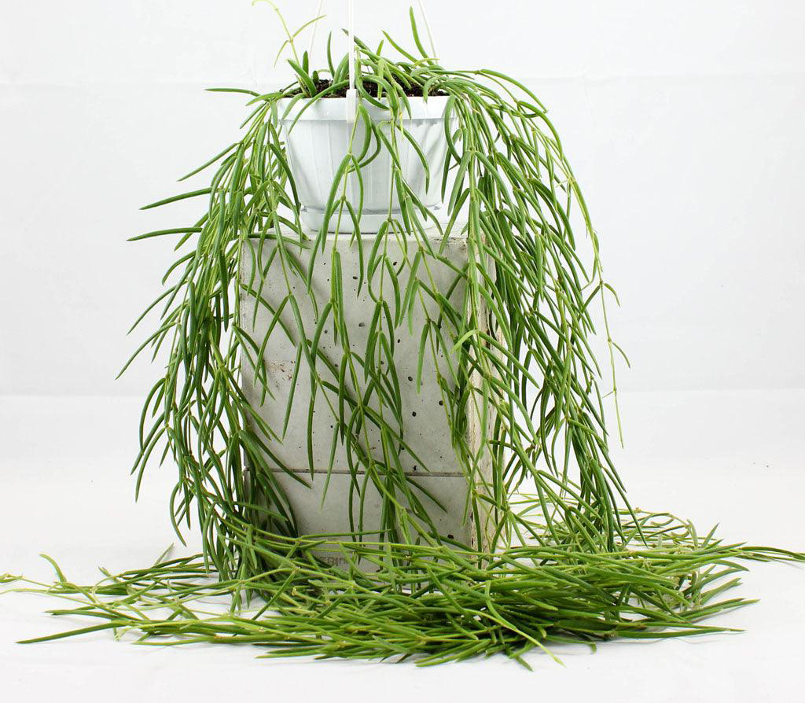

PLANT SITTERS - THE BLOGSZOBANÖVÉNYEK GONDOZÁSA, TANÁCSADÁS ÉS DESIGN ÖTLETEK NÖVÉNYI DEKORÁCIÓKHOZ
A HÓNAP NÖVÉNYE - A Philodendron crassinervium
2024. január 12.

A Philodendron crassinervium egyedi szépsége
Élőhelye
A Philodendron crassinervium egy különleges trópusi növény, amely a dél-amerikai esőerdőkből származik, különösen Brazília nedves, árnyékos területeiről. A természetben epifita vagy talajhoz közel növő forma, amely buja, szív alakú leveleiről ismert.
Otthoni tartása
A Philodendron cassinervium gondozása közepesen egyszerű, így akár kezdő növénytulajdonosok számára is megfelelő választás lehet, ha néhány alapvető igényét biztosítod. Az alábbi tényezőkre figyelj:
Fény: Kedveli a szűrt fényt, közvetlen napfénytől óvni kell, mivel az károsíthatja a leveleit. Egy világos, de közvetlen napsütéstől mentes ablak tökéletes hely számára.
Hőmérséklet: A szobahőmérséklet (18–25°C) ideális. Kerüld a huzatos helyeket és a hideg levegőt.
Páratartalom: Magas páratartalmat igényel. Használj párásítót, vagy helyezd a növényt egy kavicsos tálcára, amelybe vizet töltesz. Az időnkénti levelek permetezése is segíthet.
Talaj: Laza, jól vízelvezető talaj szükséges. Egy trópusi növényeknek szánt speciális földkeverék, amely tartalmaz tőzeget, perlitet és kéregdarabokat, ideális.
Öntözés: Mérsékelten öntözd. A talaj legyen enyhén nedves, de ne álljon benne a víz. Öntözz, amikor a talaj felső rétege kiszárad, és mindig használj jó vízelvezetésű kaspót.
Tápanyag: Tavasztól őszig kéthetente adj neki enyhe, trópusi növények számára készült folyékony tápoldatot. Télen nincs szüksége trágyázásra.
A HÓNAP NÖVÉNYE - A Ludisia discolor
2024. február 12.

A Ludisia discolor varázslatos bársonyos levelei
Élőhelye
A Ludisia discolor, más néven ékszerorchidea, a délkelet-ázsiai esőerdők aljnövényzetében honos. Thaiföld, Malajzia és Indonézia nedves, árnyékos erdeiben él, ahol magas páratartalom és szórt fény mellett fejlődik.
Otthoni tartása
A Ludisia discolor gondozása könnyű, így ideális választás orchideakedvelők számára. Az alábbi tényezőkre figyelj:
Fény: Szórt fényt kedvel, közvetlen napsütéstől óvd, hogy ne sérüljenek levelei.
Hőmérséklet: A 18–25°C közötti hőmérséklet ideális. Kerüld a hirtelen hőmérséklet-változásokat.
Páratartalom: Magas páratartalom szükséges. Használj párásítót vagy kavicsos tálcát.
Talaj: Speciális orchidea földkeverék ajánlott.
Öntözés: Öntözd, amikor a talaj enyhén kiszáradt. Ne hagyd a gyökereket vízben állni.
Tápanyag: Havonta egyszer orchideákhoz készült tápoldatot adj neki tavasztól őszig.
A HÓNAP NÖVÉNYE - A Philodendron Florida Ghost
2024. március 12.

A Philodendron Florida Ghost szellemszerű levelei
Élőhelye
A Philodendron Florida Ghost egy különleges hibrid, amely Dél-Amerika trópusi erdeiből származik. Nevét fiatal, halvány fehéres árnyalatú leveleiről kapta, amelyek idővel zölddé válnak.
Otthoni tartása
Gondozása egyszerű, ha biztosítod az alábbi feltételeket:
Fény: Szűrt fényt kedvel. Túl kevés fény esetén a levelek fakóbbak lesznek.
Hőmérséklet: 18–27°C között érzi jól magát. Kerüld a hideget és a huzatot.
Páratartalom: Kedveli a párás környezetet, de szárazabb levegőn is boldogul.
Talaj: Laza, jó vízelvezetésű talaj szükséges.
Öntözés: Hagyd, hogy a talaj felső rétege kiszáradjon két öntözés között.
Tápanyag: Havonta egyszer adj neki tápoldatot tavasztól őszig.
A HÓNAP NÖVÉNYE - A Hoya linearis
2024. április 12.

A Hoya linearis elegáns, csüngő hajtásai
Élőhelye
A Hoya linearis Nepál és India hegyvidéki erdeiben honos, ahol páradús, árnyékos környezetben fejlődik. Hosszú, csüngő hajtásaival különleges látványt nyújt.
Otthoni tartása
A Hoya linearis gondozása figyelmet igényel, de igazán megéri:
Fény: Közepes fényt kedvel, kerülni kell a közvetlen napfényt.
Hőmérséklet: 15–25°C az ideális hőmérséklet számára.
Páratartalom: Kedveli a magas páratartalmat. Használj párásítót vagy helyezd kavicsos tálcára.
Talaj: Laza, jól szellőző talajt igényel.
Öntözés: Hagyd kiszáradni a talaj felső rétegét két öntözés között.
Tápanyag: Tavasztól őszig kéthetente adj neki hoyáknak való tápoldatot.